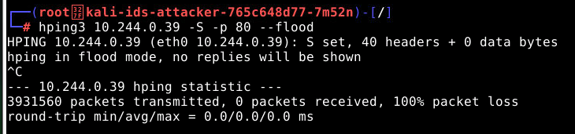

This experiment demonstrates how to detect network-based intrusions using an Intrusion Detection System (IDS) like Snort.
VSecureSphereVSecureSphereapt-get updateapt-get install -y snort/etc/snort/snort.conf:
sed command to update the ipvar HOME_NET setting without opening a text editor:
sed -i 's/^ipvar HOME_NET .*/ipvar HOME_NET 10.244.0.0\/24/' /etc/snort/snort.conf
grep 'ipvar HOME_NET' /etc/snort/snort.conf snort -A console -c /etc/snort/snort.conf -i eth0nmap -sP <victim-ip>This command will scan the network for hosts in the 172.17.0.0/24 range and can trigger an alert in Snort for network scanning activity.
Example 2: Denial of Service (DoS) using hping3:hping3 <victim-ip> -S -p 80 --floodThis will send a flood of TCP packets to port 80 on the victim container, simulating a DoS attack.
[**] [1:2028444:1] ET CINS Active Threats - Port Scan [**][**] [Classification: Attempted Information Leak] [Priority: 2] {TCP} 172.17.0.2:80 -> 172.17.0.1:59243/var/log/snort/. You can review the logs by running:
sudo tail -f /var/log/snort/snort_alert